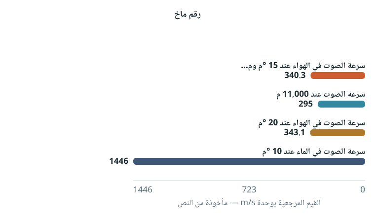

رقم ماخ
Mach Number
نسبة سرعة الجسم أو الجريان إلى سرعة الصوت المحلية في الوسط نفسه؛ مقياس للانضغاط لا للسرعة المطلقة.
رقم ماخ هو نسبة سرعة الجريان u إلى سرعة الصوت المحلية a في الوسط نفسه، فلا قيمة له بلا إعلان الوسط ودرجة حرارته. وسرعة الصوت في غاز مثالي a = √(kRT) تتغيّر مع الجذر التربيعي لدرجة الحرارة المطلقة، لذلك تنخفض كلما ارتفعنا في الغلاف الجوي حتى التروبوبوز. في هواء قياسي عند مستوى البحر و15 °م تكون a = 340.3 m/s، وعند 11,000 م تنخفض إلى 295.0 m/s أي ما يعادل 86.7% من قيمتها على مستوى البحر. ولهذا يكون الرقم نفسه في الطائرة الواحدة مطابقًا لسرعات أرضية مختلفة بحسب الارتفاع. يُستعمل رقم ماخ في ثلاثة مواضع: تحديد أهلية النموذج اللانضغاطي (يُقبل تقريب الجريان غير القابل للانضغاط حين M < 0.2–0.3)، وتصنيف نظام الجريان (دون صوتي أقل من 0.8، عابر للصوت 0.8–1.2، فوق صوتي 1.2–5.0، فرط صوتي أعلى من 5.0)، وربط نتائج نفق الريح بالحالة الحقيقية حين يتعذّر بلوغ السرعة الكاملة بأن يتحقق تشابه رقم ماخ مع تعديل رقم رينولدز. والمقصود في التصنيفات هو رقم ماخ الحرّ للجريان السائب، أما رقم ماخ الموضعي على سطح الجسم فيتجاوزه دائمًا عند أول انضغاط موضعي، وأدنى قيمة للجريان الحرّ يبلغ عندها سطحٌ ما السرعة الصوتية تُسمّى رقم ماخ الحرج Mcrit. وفي الفوهات يتوقف نوع الجريان على نسبة الضغط لا على رقم ماخ وحده، فالجريان المخنوق يبلغ M = 1 عند عنق الفوهة ويستمر في التسارع في القسم المتباعد.
كيف تعمل الظاهرة؟
الانضغاط هو ما يجعل رقم ماخ ذا معنى: في الجريان البطيء تنتقل اضطرابات الضغط في اللحظة نفسها تقريبًا فتبقى الكثافة ثابتة، وحين تقترب سرعة الجسم من سرعة الصوت يتأخر انتشار الاضطرابات وتتراكم أمام الجسم فتتكوّن موجة صدمة تفصل الجريان وتقفز فيها الحرارة والضغط والكثافة. هذا التراكم هو أصل زيادة المقاومة قرب M = 1 (تباعد المقاومة)، ولهذا لا تحلّق الطائرات التجارية قريبًا من الصوت. والآلية نفسها في الفوهات: عند نسبة ضغط حرجة يبلغ الجريان M = 1 في العنق، وما يزيد من الضغط لا يزيد التدفق بعدها بل يدفع الجريان إلى التسارع فوق الصوتي في القسم المتباعد.
العلاقة بالأرقام
a = √(kRT) بالوحدات المطلقة: لهواء k = 1.4 وR = 286.9 J/(kg·K). عند 273.15 K يكون a = 331.2 m/s، وعند 293.15 K يكون 343.1 m/s — فرق 3.6% لفرق 20 درجة. والزيادة في a بطيئة لأنها تتبع الجذر التربيعي لا الخط المستقيم. وفي السوائل a = √(K/ρ): الماء عند 10 °م بـK = 2.09×10⁹ N/m² وρ = 999.7 kg/m³ يعطي 1,446 m/s، أي أسرع من الهواء بأربعة أضعاف تقريبًا، ولهذا يكون الماء عادةً لانضغاطيًّا في الحسابات الهندسية عند السرعات العادية. وتصنيف الأنظمة في أدبيات الطيران: دون صوتي أقل من 0.8، عابر 0.8–1.2، فوق صوتي 1.2–5.0، فرط صوتي أعلى من 5.0.
مفاهيم متقاربة
يُخلط بين رقم ماخ والسرعة، وهما مختلفان: 700 km/h عند سطح البحر رقم ماخ منخفض، وفي طبقة الستراتوسفير رقم ماخ مرتفع لأن سرعة الصوت انخفضت. ويُخلط كذلك بين رقم ماخ الحرّ ورقم ماخ الموضعي: الأول حالة الجريان السائب، والثاني حالة نقطة على السطح قد تتجاوز الصوت قبل الأول بكثير. والفرق الثالث أن رقم ماخ ليس وحدة قياس فتُضاف إلى سرعة أرضية مباشرة؛ يُضرب في سرعة الصوت المحلية أولًا. والفرق الرابع أن التشابه بـM وحده لا يكفي لمضاعفة نتائج نموذج: يلزم التحقق من Re أيضًا لأن حدّ الانتقال بين الطبقات يتغيّر بتغيّر الضغط في النفق.
حدود التطبيق
الأول: في الأوساط المتغيّرة الحرارة بسرعة — كما في أنابيب الغاز عالية التدفق — لا تكون a ثابتة على طول المسار، فتُحسب خطوة بخطوة. الثاني: في الجريان ثنائي الطور أو في البلازما تفقد a = √(kRT) صلاحيتها. الثالث: قرب M = 1 تتوقف المعادلات المبنيّة على التقريب اللانضغاطي وتلزم المحاكاة الانضغاطية الكاملة. الرابع: رقم ماخ لا يوصف قوة الصدمة؛ موجة صدمة عمودية عند M = 2 ترفع الضغط الساكن إلى 4.5 ضعفًا تقريبًا، وهو ما يلزم حسابه بعلاقات الصدمة لا بالرقم وحده. الخامس: عند M > 5 يبدأ التسخين الدينامي والتحلل الكيميائي للهواء، فتصير خصائص الوسط نفسها متغيّرة.

| الكمية | القيمة | المصدر |
|---|---|---|
| سرعة الصوت في الهواء عند 15 °م ومستوى البحر | 340.3 m/s | [1] |
| سرعة الصوت عند 11,000 م | 295.0 m/s | [1] |
| سرعة الصوت في الهواء عند 20 °م | 343.1 m/s | [2] |
| سرعة الصوت في الماء عند 10 °م | 1,446 m/s | [2] |
| حدّ صحة التقريب اللانضغاطي | 0.3 — | [1] |
المصادر
- 1 Mach number — Wikipedia. en.wikipedia.org/wiki/Mach_number · اطُّلع عليه 2026-11-28
- 2 Speed of Sound in Air and Gases — The Engineering ToolBox. www.engineeringtoolbox.com/speed-sound-d_82.html · اطُّلع عليه 2026-11-28
- 3 Mach Number — NASA Glenn Research Center. www.grc.nasa.gov/www/k-12/airplane/mach.html · اطُّلع عليه 2026-11-28
استشهد بهذا المصطلح
الصيغتان مبنيتان من بيانات الصفحة نفسها: العنوان والتاريخ ورابط النسخة المنشورة.
رقم ماخ — Mach Number. (2026). ديوان المعرفة — انفراد. https://infiradev.com/diwan/terms/term-mach-number.html
@misc{term-mach-number2026,
title = {رقم ماخ},
titleaddon = {Mach Number},
howpublished = {{ديوان المعرفة — انفراد} — مرجع علمي عربي},
year = {2026},
url = {https://infiradev.com/diwan/terms/term-mach-number.html},
urldate = {2026-11-28},
note = {مراجعة علمية: Abdullah Al-Huwaidi}
}
راجعه: Abdullah Al-Huwaidi · 2026-11-28 · آخر تحديث 2026-11-28